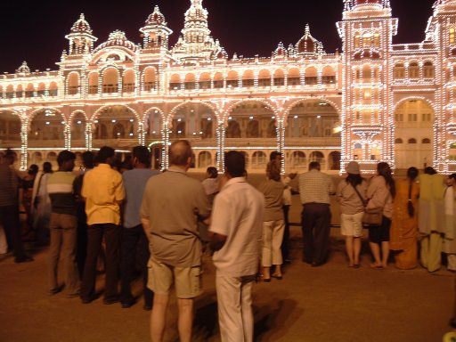
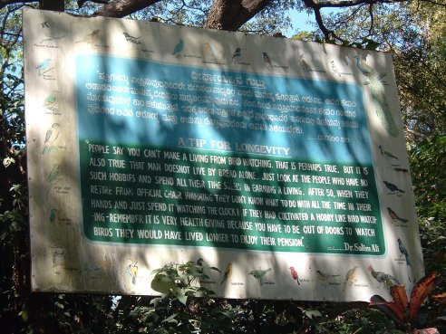

|  | Mysore Palace |
| Bird Sanctuary |  | A TIP FOR LONGEVITYPeople say that you can't make a living from birdwatching. That is perhaps true, but it is also true that man does not live by bread alone. Just look at the people who have no such hobbies and spend all their time solely in earning a living. After 50, when they retire from official chair warming they don't know what to do with all the time in their hands and just spend it watching the clock! If they had cultivated a hobby like birdwatching - remember it is very health giving because you have to be out of doors to watch birds - they would have lived longer to enjoy their pension.Dr. Salim Ali |
|---|